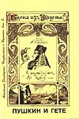
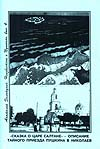
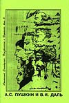
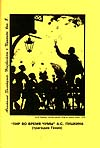
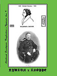
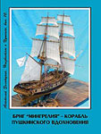

БРОШЮРЫ
В издательстве Ирины Гудым вышла подборка брошюр Анатолия Золотухина из 10-и выпусков «Неизвестное о Пушкине»:

Вып. 2 – «Родня по вдохновению (Пушкин и Гёте)» В выпуске приведена гипотеза автора о том, как Пушкин помог Гете (20 лет он не мог найти решение!) закончить «Фауста», а Гете, в свою очередь, помог Пушкину решить проблему создания поэмы «Медный всадник»
Вып. 2 – «Родня по вдохновению (Пушкин и Гёте)» В выпуске приведена гипотеза автора о том, как Пушкин помог Гете (20 лет он не мог найти решение!) закончить «Фауста», а Гете, в свою очередь, помог Пушкину решить проблему создания поэмы «Медный всадник»

Вып. 4 – «Сказка о царе Салтане» - описание тай- ного приезда Пушкина в Николаев». В выпуске приведены доказательства того, что «Сказка о царе Салтане» - это описание тайного приезда Пушкина в Николаев в октябре 1823 г.
на яхте Е. Зонтага «Утеха». Приведено 41 примечание к сказке, как комментарии этого события.
Вып. 4 – «Сказка о царе Салтане» - описание тай- ного приезда Пушкина в Николаев». В выпуске приведены доказательства того, что «Сказка о царе Салтане» - это описание тайного приезда Пушкина в Николаев в октябре 1823 г.
на яхте Е. Зонтага «Утеха». Приведено 41 примечание к сказке, как комментарии этого события.

Вып. 6 – «А.С. Пушкин и В.И. Даль» - Рассмотрены взаимоотношения Пушкина с Далем. Представлены доказательства (на основе архивных данных) того, что Даль не писал пасквиля на жену адмирала А.С. Грейга. Рассмотрен провидческий рисунок Пушкина, связанный с судьбою Карла Даля, брата В.И. Даля.
Вып. 6 – «А.С. Пушкин и В.И. Даль» - Рассмотрены взаимоотношения Пушкина с Далем. Представлены доказательства (на основе архивных данных) того, что Даль не писал пасквиля на жену адмирала А.С. Грейга. Рассмотрен провидческий рисунок Пушкина, связанный с судьбою Карла Даля, брата В.И. Даля.

Вып. 8 –«Пир во время чумы» А.С. Пушкина (трагедия Гения)» - Приведены доказательства того, что трагедия А.С. Пушкина
«Пир во время чумы» была прощальной песнею, предчувствием близкой гибели. Поводом для расправы над поэтом было то, что он фактически был идеологом восстания декабристов.
Вып. 8 –«Пир во время чумы» А.С. Пушкина (трагедия Гения)» - Приведены доказательства того, что трагедия А.С. Пушкина
«Пир во время чумы» была прощальной песнею, предчувствием близкой гибели. Поводом для расправы над поэтом было то, что он фактически был идеологом восстания декабристов.

Вып. 9 – «А.С. Пушкин и К. Х. Кноре» - Приведены доказательства того, что стержневым прообразом Ленского был К. Х. Кноре
Вып. 9 – «А.С. Пушкин и К. Х. Кноре» - Приведены доказательства того, что стержневым прообразом Ленского был К. Х. Кноре

Вып. 10 – «Бриг "Мингрелия" - корабль Пушкинского вдохновения»
Вып. 10 – «Бриг "Мингрелия" - корабль Пушкинского вдохновения»
Буклет посвященный городищу "Дикий Сад"